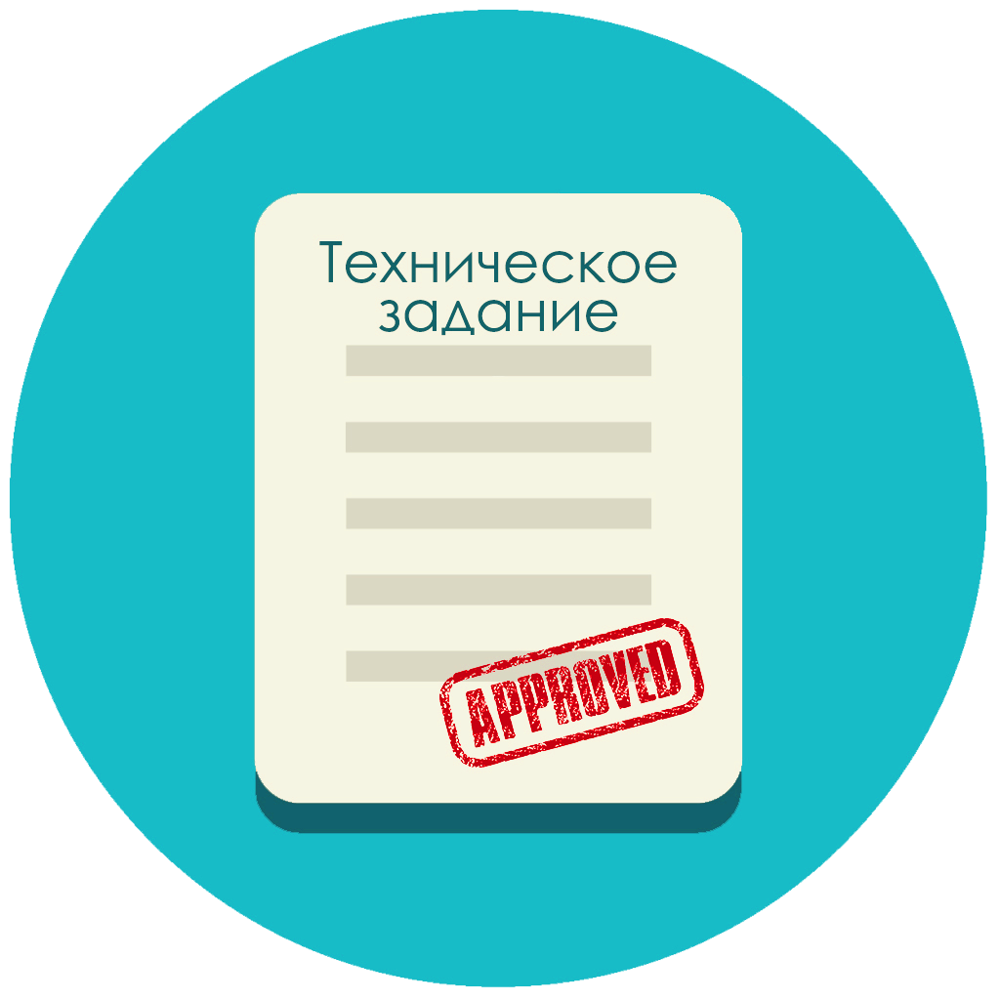
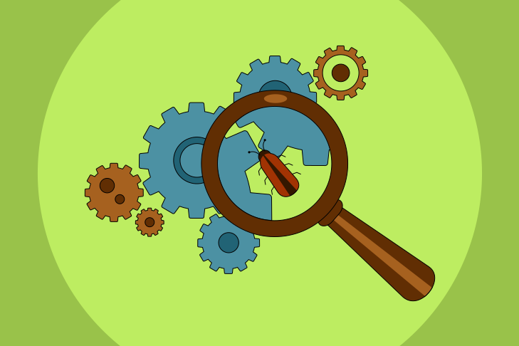
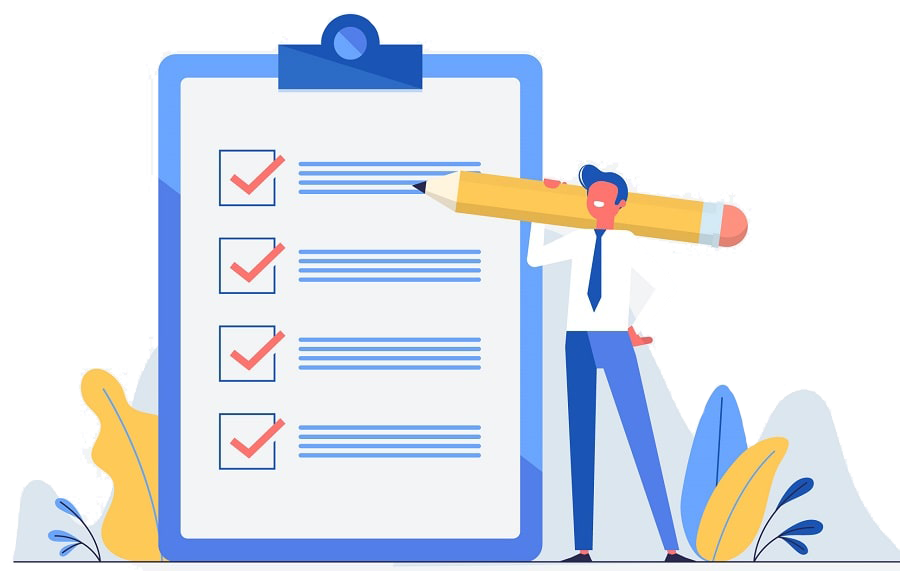

Процесс WEB-разработки
WEB-разработка — процедура создания WEB-приложения или WEB-сайта. Основными этапами этого процесса являются такие мероприятия, как WEB-дизайн, вёрстка страниц сайта, WEB-программирование на стороне сервера и клиента, а также работы по конфигурированию WEB-сервера.
Техническое задание (ТЗ)
Его разработку для WEB-специалистов выполняет, обычно, менеджер всего интернет-проекта. Ну, а работа с самим заказчиком начинается с заполнения брифа, где он излагает свои желания в отношении структуры сайта и его визуализации, уточняет ошибки и недоработки, в случае наличия, в прошлой версии WEB-сайта, приводя свои примеры, как у его конкурентов. На основании брифа, менеджер создаёт ТЗ, учитывая при этом, имеющиеся в наличии возможности дизайнерских и программных инструментов. Сам такой этап оканчивается лишь после утверждения ТЗ клиентом. Однако, следует заметить, что все этапы проекта WEB-сайта довольно сильно зависимы от множества различных факторов, как, например, величина объёма интернет-портала, его функциональность, а также задачи для которых предназначен создаваемый интернет-ресурс и многое-многое иное. Но, тем не менее, имеется и некоторое количество этапов, которые непременно присутствуют при планировании абсолютно любого будущего проекта.
Дизайн страниц WEB-сайта: основных и типовых
Любая работа по интернет-сайту начинается с создания его дизайна, обычно используя для этого графический редактор. WEB-дизайнер создаёт, обыкновенно, несколько таких вариантов, но в строгом соответствии с ТЗ. При этом, отдельно разрабатывается дизайн «Главной» страницы сайта, и далее - дизайн остальных типовых страниц, как-то, например: новости, статьи, о нас, каталог. Собственно, сам «дизайн» являет собой графический файл, как слоёный рисунок, включающий в себя более мелкие картинки в виде слоёв в общей картинке. При этом специалист обязательно учитывает все ограничения для стандарта HTML, то есть не вырабатывает дизайн, который невозможно будет впоследствии реализовать стандартными HTML-средствами. Исключением является только лишь Flash-дизайн. Количество самих эскизов и порядок их предъявления заказчику заранее оговариваются с менеджеров всего проекта, который выполняет контроль запланированных сроков. Ещё, также больших WEB-фирмах в процессе принимает участие и Арт-директор, контролирующий качество исполнения графики. Этот этап точно также, как и предыдущий, оканчивается его утверждением у заказчика.
Вёрстка страниц и шаблонов в HTML
Утверждённый клиентом дизайн далее передаётся специалисту-верстальщику, «нарезающему» графическое изображение на отдельные картинки, из которых позже будет сложена HTML-страница. В ходе такой работы создаётся программный код, который возможно уже смотреть при помощи какого-либо браузера (интернет-обозревателя). Ну, а как таковые эти типовые страницы, впоследствии, будут применяться, как HTML-шаблоны.

Программирование

После проведённых, выше упомянутых мероприятий, готовые файла в формате HTML передаются в работы WEB-программисту. Разработка программного обеспечения интернет-сайта вполне может выполняться, как «с самого нуля», так и на основании системы CMS, зачастую так называемого «CMS-движка». В случае применения системы управления сайтом следует отметить, что она сама, в каком-то смысле слова, уже готовый сайт, включающий в себя заменяемые блоки. Ну, а самого программиста, в таком случае, будет более верно называть «CMS-специалистом», который должен заменить существующий стандартный шаблон, на новый оригинальный, разработанный на базе начального WEB-дизайна, с учётом индивидуальных пожеланий заказчика. При разработке программного обеспечения интернет-сайта специалисту по CMS также устанавливаются контрольные сроки проведения работ.
Тестирование
Сам такой процесс вполне может содержать в себе самые различные виды проверок, как-то, например: внешний вид страницы сайта с увеличенными шрифтами, при различных размерах браузерного окна, или из-за отсутствия Flash-плеера, и многое иное. Также используется и пользовательское тестирование, так называемое - юзабилити. Обнаруженные появившиеся ошибки в работе сайта отправляются для их исправления до тех самых пор, пока исполнитель их не устранит. В этом случае сроки работы контролирует всё тот же проектный менеджер. Хотя, на этапе тестирования ещё привлекают к работе и самого дизайнера, чтобы он осуществлял авторский надзор.
Размещение нового портала в Интернет-сети
Файлы разработанного WEB-сайта помещают на сервере, например, провайдера, где осуществляют необходимые настройки. Следует отметить, что на таком этапе интернет-сайт ещё пока закрыт для широкого круга пользователей.
Наполнение сайта контентом и его публикация
Новый интернет-сайт наполняют контентом, то есть различными текстами, изображениями, файлами для скачки и тому подобным. Иногда сами тексты составляются копирайт-специалистом фирмы-разработчика сайта, иногда ими занимается сам клиент, нанимая автора со стороны. Такой вопрос решается ещё на стадии составления самого ТЗ, так как, если контент разрабатывается копирайтером разработчика, то это обязательно согласовывается с заказчиком одновременно с иными этапами реализуемого проекта.
SEO-оптимизация
Внутренняя оптимизация связана с определёнными изменениями, вносимыми в сам интернет-сайт. Процесс оптимизации начинается с составления, так называемого, семантического ядра, для которого подбираются такие ключевые слова, которые завладеют самым большим вниманием пользователей портала, и с которыми обойти конкурентов проще. Впоследствии таковые «ключевики» вносятся на сам интернет-портал и все гиперссылки, тексты и метатеги адаптируются таким образом, чтобы поисковые интернет-системы смогли их быстро обнаруживать по составленным «ключевикам». Внешнее SEO, как правило, сводится, к построению определённой структуры для входящих ссылок на новый сайт. В принципе – это и есть сама раскрутка нового портала и к созданию сайта внешняя оптимизация не имеет никакого отношения. Сама же SEO-оптимизация подразделяется на так называемые: «белую» и «чёрную», после проведения первой интернет-портал попадает в ТОП, а после проведения второй - в «бан» поисковых систем. Следует заметить, что «белая» оптимизация – это довольно длительный и трудоёмкий процесс, при котором стоимость его самого которого может превысить в разы материальные затраты на WEB-разработку самого сайта.
Окончательная сдача всего проекта
Заказчик ознакамливается с полностью готовым заказом и в случае, когда его всё полностью устраивает, то подписывают соответствующие документы, как-то Акт выполненных работ, о сдаче ему всего проекта. Кроме того, на таком этапе работы осуществляется ещё и обучение клиента или его представителя необходимым навыкам администрирования нового сайта.
